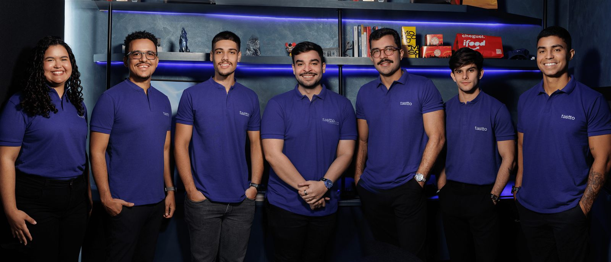

Operação de Salão
Estratégias para aumentar ticket médio, melhorar a experiência presencial e fazer o salão vender com mais inteligência.
Estratégia, dados e retenção pra transformar pedido em cliente que volta, sem depender só do apetite do iFood.

SERVIÇOS
Não entramos apenas para fazer divulgação. Entramos para organizar crescimento, reposicionar a marca, estruturar a comunicação e transformar dados em decisões melhores.
FERRAMENTAS
Não entramos apenas para fazer divulgação. Entramos para organizar crescimento, reposicionar a marca, estruturar a comunicação e transformar dados em decisões melhores.



EQUIPE
Somos a Tastto, um time especializado em crescimento para restaurantes. Juntamos estratégia, dados, mídia, CRM e relacionamento para tirar o restaurante do achismo.
Não trabalhamos à distância. Estamos nos salões, nas cozinhas e nos eventos do food service, conversando com quem opera o restaurante todos os dias.

Ainda tem dúvidas? Fique à vontade para entrar em contato. Teremos prazer em ajudar.
Fale com a genteTráfego pago faz parte da nossa atuação, mas não define o nosso trabalho. A Arttico conecta aquisição, CRM, dados e comercial para construir estratégias de crescimento mais completas.
Sim. Utilizamos os canais de mídia que fazem sentido para cada estratégia, sempre considerando o comportamento do público, o processo comercial e os objetivos da empresa.
Sim. O CRM é uma das peças da nossa estratégia para organizar oportunidades, acompanhar a jornada dos leads, melhorar follow-ups e gerar inteligência comercial.
Não necessariamente. Avaliamos a estrutura atual da empresa e identificamos quais processos precisam existir para que as oportunidades geradas pelo marketing sejam melhor aproveitadas.
O primeiro passo é preencher nosso formulário. A partir das informações enviadas, nossa equipe avalia o momento do negócio e identifica se existe aderência entre as necessidades da empresa e nosso modelo de atuação.
Não. Crescimento depende de diferentes fatores, incluindo produto, mercado, investimento, operação e capacidade comercial. Nosso trabalho é construir estratégias, acompanhar dados e melhorar continuamente os processos sob nossa atuação.